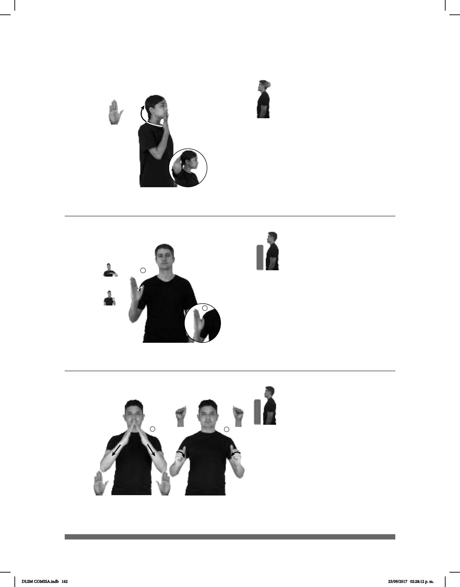

162
(B-P 155)
1
2
______________________________neg____
pro-YO NO-GUSTAR SABER SOBRE DROGAS
No me gusta saber de drogas.
Seña: SM
Seña que pasa de
B-P.2 a B-P.16
Palma oblicua hacia la
izquierda y hacia afuera.
A la altura del pecho.
El dedo pulgar se
1. sust. f. Sustancia que
altera el sistema nervioso y que se
consume sin prescripción médica;
puede crear adicción y su uso, por lo
general, está social o legalmente
prohibido o restringido al campo de la
con estupefacientes.
Seña: I. y II. SS
Seña que pasa de B-P.2
a A.5
Palmas oblicuas hacia abajo
y hacia el centro.
A la altura del pecho, los
dedos se tocan.
Las manos parten de un
mismo punto y luego se abren hacia
abajo mientras los dedos se cierran contra
la palma.
Simula la forma de una
pirámide.
1. adj. Que pertenece a Egipto
o se relaciona con él. 2. País ubicado en el
norte de África cuya capital es El Cairo.
(B-P 156)
1
2
_________________________neg_
HOMBRE EGIPCIO NO RESPONDER
El egipcio no respondió.
(B-P 154)
pro-YO CONFIAR pro-ÉL NO-PODER DOBLE CARA
Seña: SM
B-P.2
La palma inicia hacia adentro
y termina hacia afuera.
De la barbilla a la nuca.
La mano se mueve
formando un arco.
adj. Persona que
rectitud o que disfraza o esconde
sus verdaderos sentimientos o
creencias.
DLSM COMISA.indb 162 25/09/2017 02:28:12 p. m.